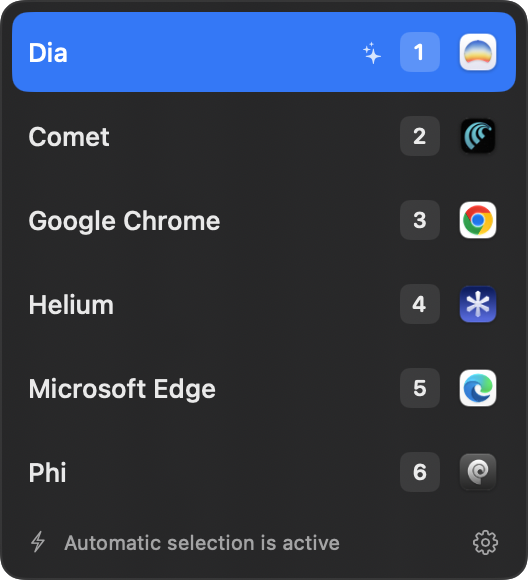

CLICK
Any external HTTP or HTTPS link reaches Reflex.
[ MACOS LINK ROUTER // 001 ]
Make Reflex your default browser. Every external link goes to the browser and profile that fits it best.
brew install --cask Joker666/tap/reflex

[ THE ROUTE // 002 ]
Any external HTTP or HTTPS link reaches Reflex.
Jev uses the source app and the purposes that you wrote.
A strong match opens. An uncertain match shows the chooser.
[ TARGETS // 003 ]
[ MANUAL OVERRIDE // 004 ]
Hold Option while you click to bypass automatic selection. Change the modifier to Control, Shift, Command, or Fn in Settings.
[ PRIVACY // 005 ]
01 Query values and fragments are removed before automatic selection.
02 Reflex does not save the links that you open.
03 Your selected browser receives the original link.
Profile discovery supports recognized Chromium browsers and Dia. Safari, Firefox, Zen, and Phi profiles are not available.